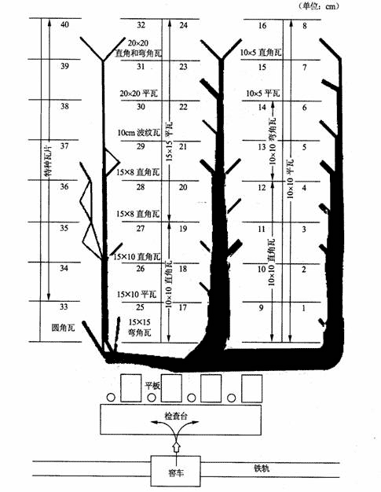
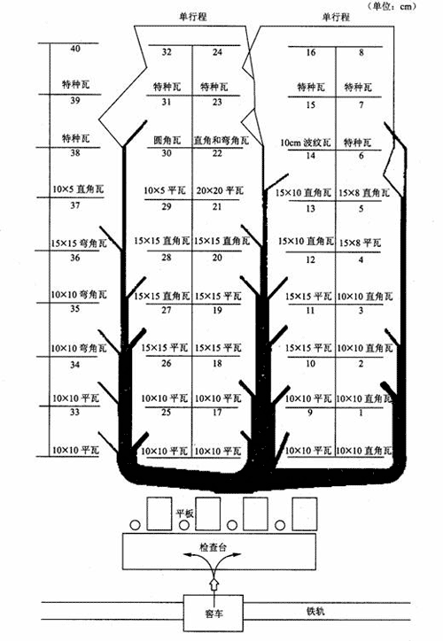

线图实例分析
例如：检查储存瓦坯的布置，用线图分析此布置的运输距离是否最短?
(1)记录
瓦坯(初烧后上釉前的瓦片)从窖车卸到平台上手推车送往混凝土建造的储存架存放，准备上釉。图5-35为库房原平面布置图，此布置运输距离是否最短？为此用线图进行分析。研究选具有代表性的几车瓦坯，
根据线图绘制的方法，绘制现行方法的线图，如图5-35所示。图中阴影带的宽度表示各工作地点之间的线数，代表各工作地点的相对活动量。

图5-35 现行方法的储存瓦坯线图
(2)考查
由图5-35可知，活动最频繁的是l
(3)新方法
根据对现行方法的考查分分析来设计新的方法。设计原则：将运输量较多的瓦坯储放尽量靠近检查台，而存放特种瓦坯的储存架远离检查台。新方法的储放瓦坯线图如图5-36所示。经验表明此方案运输距离从

图5-36 新方法的储放瓦坯线图